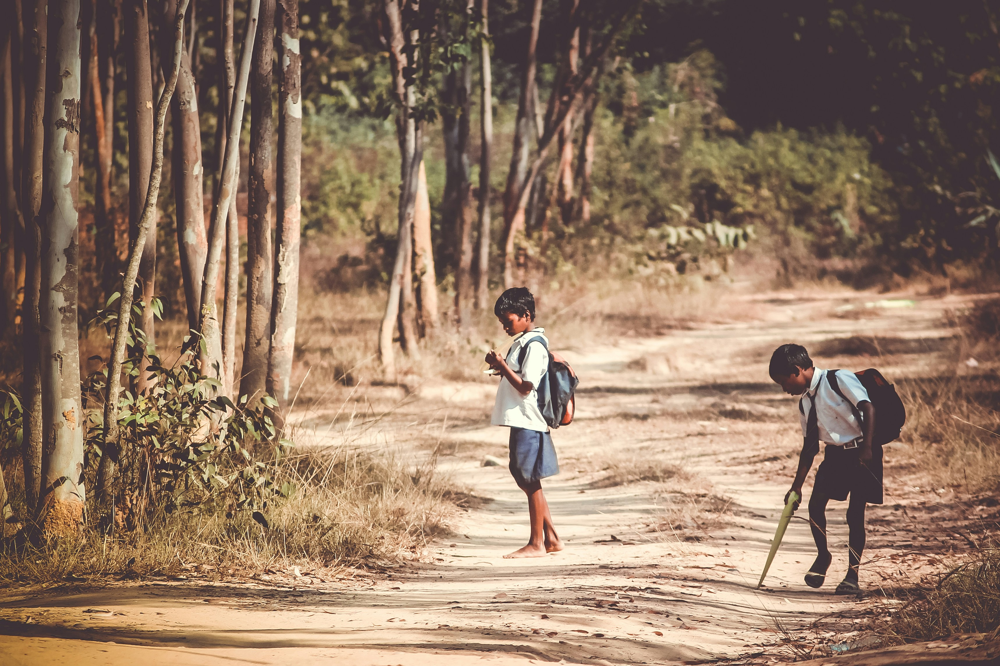

Desafios e Soluções da Educação Rural
Principais desafios
A educação rural enfrenta obstáculos como infraestrutura precária, escassez de profissionais, dificuldades de transporte e acesso à tecnologia.

Soluções para melhorar
- Elevação da escolaridade
- Qualificação profissional
- Inclusão dos agricultores familiares no ensino formal
- Formação continuada de educadores
- Atividades pedagógicas contextualizadas ao campo
Transformação na prática
O Programa Escola da Terra, em Igarassu (PE), promove formação de educadores do campo, valorizando saberes locais e integrando teoria e prática.